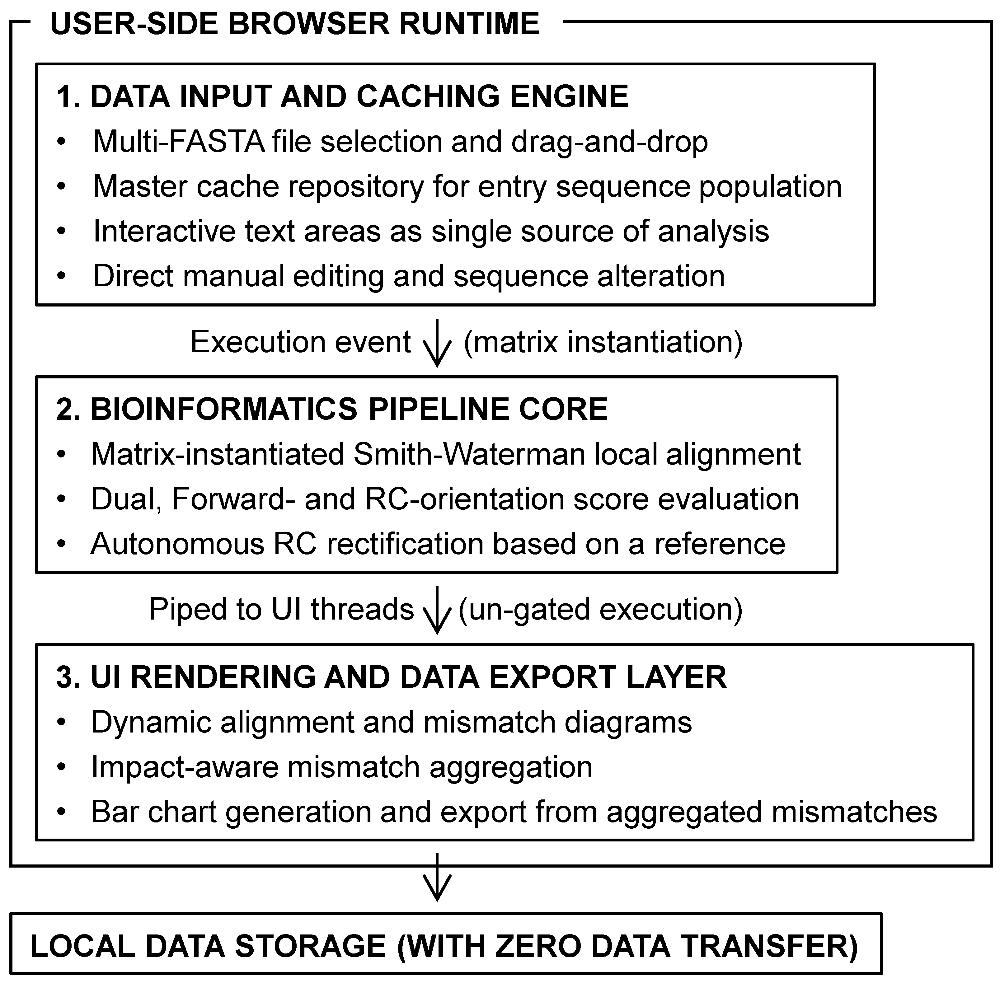

This platform acts as an un-gated, client-side single-page application (SPA) designed for rapid batch sequence mutation analytics, population frequency compounding, and scalable vector graphics (SVG) generation. By implementing all algorithmic components directly in the browser runtime, it eliminates remote data transfers, preserving data privacy.
💾 Run Offline / Standalone Version
You can download this entire web application as a single file and run it directly on your local machine without an internet connection.
📥 Download Standalone HTML
🗺️ System Architecture Diagram
Review the complete software architecture workflow and data processing piping modules.
️ Show Architecture Diagram (Figure 1)

🔗 Open in new tab
🎬 Video Demonstration
Watch a step-by-step walkthrough demonstrating batch alignment, reverse-complement rectification, and data export.
1. Sequence Input Parsing & Core Caching Engine
The platform supports multiple selection and drag-and-drop file inputs in both standard and multi-FASTA formats. Upon ingestion, sequence records are automatically parsed and appended to the tracking system cache.
- Batch Checkboxes: Act as a master cache repository. Checking or un-checking names updates the downstream analysis scope options.
- Textarea Editing (Critical Principle): The text boxes are the single source of truth for the alignment engine. Clicking "Apply Selection to Textbox" updates FASTA headers and sequence strings inside these text boxes. The backend algorithm will read and align exactly what is visible in these boxes when executed. Users can directly type, erase, or alter sequences inside these boxes before executing the analysis.
2. Automatic Reverse Complement Alignment
Clicking "Run Batch Alignment" starts the computation of a cross-pivot matrix between all items in the query box against all items in the reference box using a native matrix-instantiated Smith-Waterman (Local Alignment) algorithm.
- Strand Autodetection: For each individual query sequence, the system computes alignment scores for both the forward and reverse complement (RC) orientations. The orientation yielding the higher score is automatically selected.
- Reverse Complement Reporting Standardization: To ensure accurate profiling and aggregation of mismatches based on the reference coordinate system, if the RC orientation yields the higher score, the system automatically replaces the query sequence with its RC counterpart. Consequently, all subsequent mismatch and gap identifications are reported relative to this replaced RC sequence.
3. Masking No-coverage Regions
Any reference coordinates falling outside the aligned range (before the first aligned base or after the last aligned base) are masked with a light gray background labeled No Alignment Coverage. This visual aid allows you to immediately distinguish between a true sequence conservation and a simple lack of data coverage.
4. Mismatch Aggregation & Plotting
Clicking "Count and Plot Mismatches" analyzes mismatches within your selected reference gene or region. The tool automatically counts recurring mismatches across all samples and displays them in a stacked bar chart. Click "Download SVG" to download the chart data in the SVG format. Click "Download Mismatch CSV" to download the mismatch data and its codon translation impact (missense, nonsense, or silent). This features help you identify mismatch hotspots and view the distribution of mismatch types.
5. Trace-Faithful Phase Deconvolution Engine
Clicking "Run Phasing" initiates a specialized, high-fidelity dual-allele deconvolution pipeline designed to resolve overlapping chromatogram tracks (such as biallelic point mutations, fixed substitutions, or block variations) directly from raw ABI file metrics.
- Textbox Routing Constraint (Single Reference Rule): The phasing engine uses only the first (top) sequence of the Reference Sequence(s) textarea.
- Direct Trace Extraction & Tail Auto-Recovery: The engine directly extracts the raw 4-channel wave data and official base-call positions from your loaded ABI file(s). The algorithm automatically calculates the baseline spacing intervals to restore and complete the trailing peak matrix.
- Localized Peak-Search & Noise Correction: For every individual base position, the engine automatically scans a local window of 5 sampling points across all four color channels (A, C, G, T), trying to locks onto the true peak maximum and to neutralize trace shifts, background baseline variations, and raw dye-blob anomalies.
- Dynamic User Control Parameter Panel:
• Start Position (QPos): Overrides the automatic slope detection to force the phasing sequence origin to an absolute coordinate index.
• Specific Anchor Sequence & Query RC: Forces the phasing sequence origin to the provided sequence (e.g., a sequence immediately upstream of CRISPR-Cas9 guide RNA) and automatically determines whether to deconvolve in the forward direction or execute a Reverse Complement strand calculation matrix inversion.
• Regex Window Width: Determines the size of the sliding regular-expression matching window (default 20 bp) to balance mapping sensitivity against sequence complexity.
• Secondary Peak Ratio: Calibrates the software's sensitivity to minor signal heights (default 0.12). True secondary traces above this ratio are processed as polymorphic variants, while signals below are filtered out as clean background noise.
6. One-to-One Peak Allocation & Biallelic Batch Multiple Sequence Alignment (MSA)
Once coordinates are locked, the engine decodes overlapping peak signals under a strict rule of 1-to-1 trace faithfulness.
- Mutual Trace Complementarity: The engine splits dual-peak traces by cross-comparing them with the reference sequence template. Allele A tries to actively take the reference base character, while Allele B captures the alternative sequences. If a position is clean or lacks a secondary trace, both alleles receive identical base assignments, ensuring zero data loss.
- Co-linear Equality: Allele A and Allele B are constructed to be equal in length, acting as an un-gapped, 1-to-1 reflection of the physical trace peaks. Thees allele sequences are used for downstream alignments.
- Consolidated Dashboard Visualization: The engine displays the Biallelic Batch Multiple Sequence Alignment Panel
- Data Export: Click "Download FASTA" or "Download Alignment (.txt)" to generate instant data packages compiled via client-side Blob object allocation.